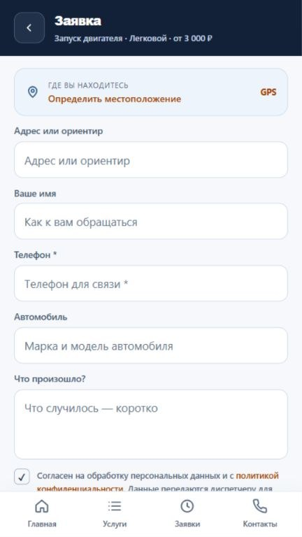

Кейс 06 / Android · RuStore
Avto&GO
Приложение для вызова техпомощи на дороге. В каталоге есть запуск двигателя, отогрев, вскрытие автомобиля и другие выездные услуги.
Открыть в RuStore ↗

Что реализовано
Способы обращения
Можно выбрать услугу и отправить заявку или сразу позвонить диспетчеру. Адрес доступен для ручного ввода и через геолокацию.
Цены и уведомления
Цены обновляются с сервера. Подписка на новости и акции добровольная. Время приезда уточняет диспетчер.